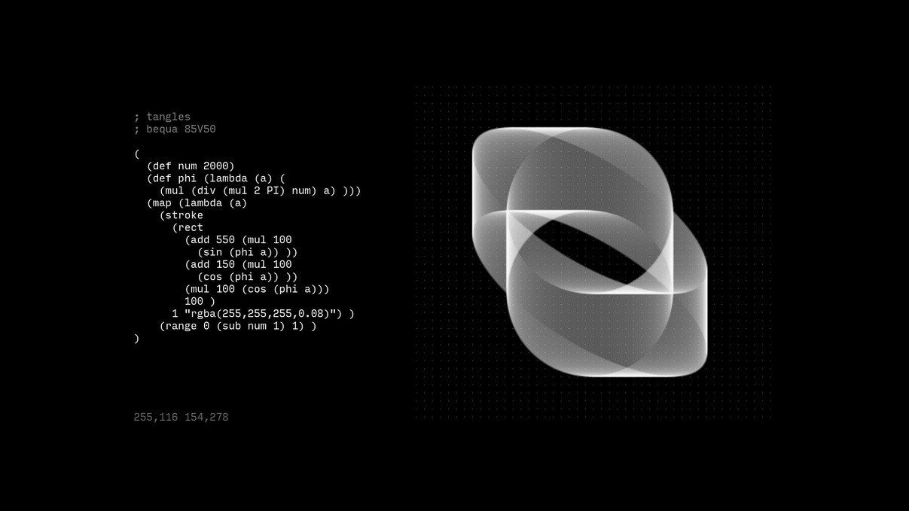
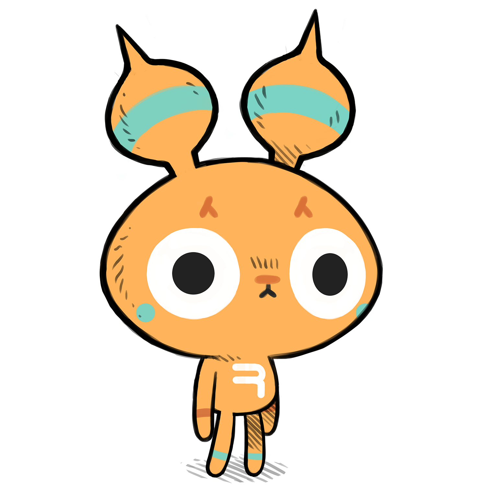
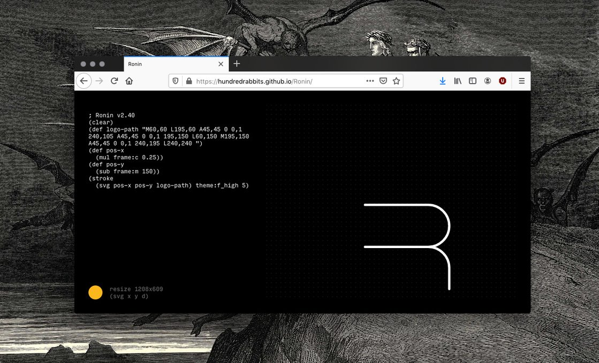

ronin
An image processing tool
 Ronin is an image processing tool.
The application interprets a dialect of LISP to automate simple graphical tasks, like resizing, cropping, coloring, and generating procedural imagery. You can look at these example files to better understand how this all works.
Download
Distributions
The first version of Ronin was produced in Ensenada, Mexico in 2016 after Rekka's Macbook died (see tools ecosystem) and photoshop became unusable. The first version was designed to work on our Chromebook.
In 2019, we released Ronin for the browser.
Eventually, we'd like to make an uxn port. For the time being, the electron version is the main version.
Helpers
Ronin helpers are keywords that facilitates adding coordinates from the canvas into your script. The currently supported helpers are $rect, $pos, $line, $circle & $arc. Holding right-click while using a $helper will run the script as the mouse is injecting coordinates into the script. Paste the following script, and trace a shape in the canvas:
(fill $circle "red")
Additional helpers are also available to change parts of a shape, these are as follow: $x, $y, $xy, $wh, $a & $r. Paste the following script, and change the position and radius of a circle:
(clear) (fill (circle $xy $r) "red")
Extra helpers are available for various transformations, these are as follow: $drag, $view, $poly, $move & $rotate. Paste the following script, and draw the vertices of a line, press escape to stop:
(clear) (stroke $poly "red")
Import/Export
To save an image in memory, open an image file with Ronin, or drag an image file on the window. You will then be able to import it by using the file image's name. If the image file is `preview.png`, you can import it as follow:
(import $path (pos 100 100)) (import "preview.jpg" (rect 100 100 400 400)) (export)
Library
- (open name ~scale) Imports a graphic file with format. - (import name ~shape) Imports a graphic file with format. - (export ~format ~quality) Exports a graphic file with format. - (print string) Exports string to file. - (pos ~x ~y) Returns a position shape. - (line ax ay bx by) Returns a line shape. - (size w h) Returns a size shape. - (rect x y w h) Returns a rect shape. - (circle cx cy r) Returns a circle shape. - (ellipse cx cy rx ry) Returns a ellipse shape. - (arc cx cy r sa ea) Returns an arc shape. - (poly ...pos) Returns a poly shape. - (text x y p t ~a ~f) Returns a text shape. - (svg x y d) Returns a svg shape. - (color r g b ~a) Returns a color object. - (hsl h s l ~a) returns a HSL color object - (resize ~w) Resizes the canvas to target w and h, returns the rect. - (rescale ~w ~h) Rescales the canvas to target ratio of w and h, returns the rect. - (crop ~rect) Crop canvas to rect. - (copy ~rect) Copy a section of the canvas. - (paste copy ~rect) Paste a section of the canvas. - (drag ~rect) Drag a part of the canvas. - (view a b) View a part of the canvas. - (pick ~shape) Returns the color of a pixel at pos, or of the average of the pixels in rect. - (orient ~deg) Orient canvas with angle in degrees. - (mirror) Mirror canvas, methods: x, y. - (transform) The transform toolkit, methods push, pop, reset, move, scale, rotate. - (stroke shape color ~thickness) Strokes a shape. - (fill ~rect) Fills a shape. - (clear ~rect) Clears a rect. - (gradient line ~colors 'black']) Defines a gradient color. - (guide shape color) Draws a shape on the guide layer. - (pixels fn ~q ~rect) - (saturation pixel q) Change the saturation of pixels. - (contrast pixel q) Change the contrast of pixels. - (brightness pixel q) Change the brightness of pixels. - (additive pixel q) Condense the data of pixels. - (multiply pixel q) Change the color balance of pixels. - (normalize pixel q) Normalize the color of pixels with another color. - (lum color) Return the luminance of a color. - (concat ...items) Concat multiple strings. - (split string char) Split string at character. - (add ...args) Adds values. - (sub ...args) Subtracts values. - (mul ...args) Multiplies values. - (div ...args) Divides values. - (mod a b) Returns the modulo of a and b. - (rad degrees) Convert radians to degrees. - (deg radians) Convert degrees to radians. - (clamp val min max) Clamps a value between min and max. - (step val step) - (min) Returns lowest value. - (max) Returns highest value. - (ceil) Rounds up to the nearest integer. - (floor) Rounds down to the nearest integer. - (round) Rounds to the nearest integer - (sin) - (cos) - (log) - (pow) - (sqrt) Calculate the square root. - (sq a) Calculate the square. - (PI) - (TWO_PI) - (random ...args) - (gt a b) Returns true if a is greater than b, else false. - (lt a b) Returns true if a is less than b, else false. - (eq a b) Returns true if a is equal to b, else false. - (and ...args) Returns true if all conditions are true. - (or a b ...rest) Returns true if at least one condition is true. - (each arr fn) Run a function for each element in a list. - (map arr fn) Run a function on each element in a list. - (filter arr fn) Remove from list, when function returns false. - (reduce arr fn acc) - (len item) Returns the length of a list. - (first arr) Returns the first item of a list. - (last arr) Returns the last - (rest [_ ...arr]) - (range start end ~step) - (get item key) Gets an object's parameter with name. - (set item ...args) Sets an object's parameter with name as value. - (of h ...keys) Gets object parameters with names. - (keys item) Returns a list of the object's keys - (values item) Returns a list of the object's values - (convolve kernel ~rect) - (blur) Returns the blur kernel. - (sharpen) Returns the sharpen kernel. - (edge) Returns the edge kernel. - (offset a b) Offsets pos a with pos b, returns a. - (distance a b) Get distance between positions. - (echo ...args) Print arguments to interface. - (debug arg) Print arguments to console. - (time ~rate) Returns timestamp in milliseconds. - (js) Javascript interop. - (on event f) Triggers on event. - (test name a b) - (benchmark fn) Logs time taken to execute a function.
license
The license applies to all the documented projects, the projects themselves and their assets. The source code of this website and our apps are under the MIT License, but the assets and text content of this website and of our apps are under the BY-NC-SA4.0 License. We are happy to pass knowledge, and that others can learn from our projects, improve on them, or make them into something else that is useful, but please, do not try to sell our projects as is under a different name. Doing so is very lazy, and disrespectful to us.
DO NOT resell or mint our work.
You can find our more recent projects on Sourcehut.
pull request
See the Github and Sourcehut repositories. Pull Requests are welcome, but please read our design philosophy first.